-
- IT基礎・マインド研修
ITサポーターとしての土台をつくるIT未経験の方でも安心してスタートできるよう、ITの基礎知識だけでなく、仕事の進め方や考え方から学びます。
- IT・インフラ・システムの基礎理解
- エンジニアとしての心構え・ビジネスマナー
- 「なぜそれを行うのか」を考える思考力私たちが目指す「お客様に寄り添うITサポーター」としての土台をここで築きます。
- IT基礎・マインド研修
BENEFIT
福利厚生
制度
- 社会保険完備
雇用保険、健康保険、厚生年金、労災保険 - 交通費支給
- 服装自由
担当プロジェクトによる - 資格取得支援
同資格3回まで受験費用補助、学習資料補助 - 入社日初日から3日間の
特別有給付与 - 時短勤務制度あり
給与・手当
- 社会保険完備
雇用保険、健康保険、厚生年金、労災保険 - 交通費支給
- 服装自由
担当プロジェクトによる - 資格取得支援
同資格3回まで受験費用補助、学習資料補助 - 入社日初日から3日間の
特別有給付与 - 時短勤務制度あり
その他
- 健康診断
- 引越し補助
- 昇給年1回以上
- 入社時研修
- 技術研修

TRAINING
人材育成
人材育成は、「技術を教えること」だけがゴールではありません。
私たちが大切にしているのは、お客様の課題に寄り添い、整理し、解決まで伴走できる人材を育てること。未経験からでも安心してスタートできる基礎研修と、現場で“生きた力”を身につけるOJTを組み合わせ、一人ひとりが ITサポーターとして自立するまで、段階的に支援します。
複雑なITを、シンプルな価値に変える。その力は、正しい育成環境から生まれます。
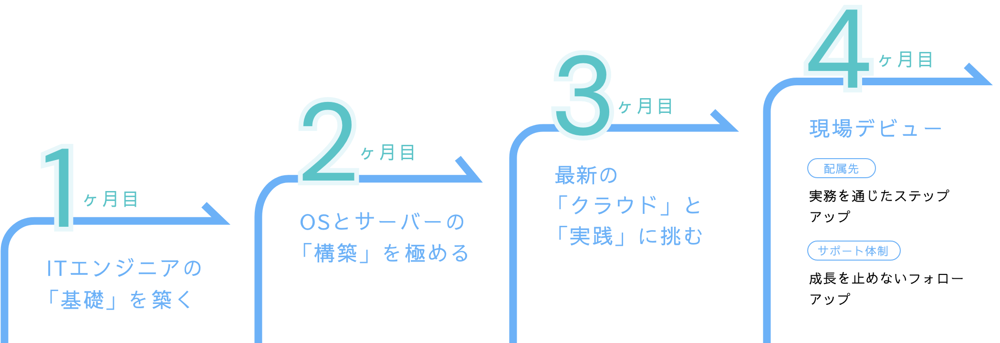
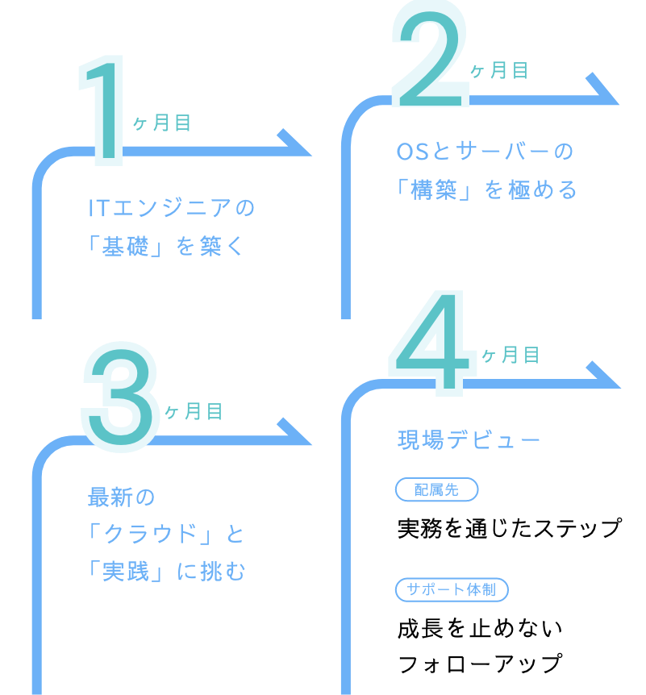
-
1ヶ月目
ITエンジニアの「基礎」を築く
- ビジネス基礎
- エンジニアのキャリア理論、マナー、仕事の進め方を習得。
- ネットワーク
- TCP/IP、IPv4、Ciscoルータの基本操作をマスター。
- 個人演習
- 要件確認から構築手順の検討までを一人で完結させる力を養います。
-
2ヶ月目
OSとサーバーの「構築」を極める
- Linux
- インストールからコマンド操作、シェルスクリプトによる自動化を実践。
- サーバー構築
- Web、DB、DNS、CMSなど、多岐にわたるサーバー環境を構築。
- Windows Server
- Active Directory（権限管理）やバックアップなどの運用技術を習得。
-
3ヶ月目
最新の「クラウド」と「実践」に挑む
- AWS (クラウド)
- VPC、EC2、RDS、ELBなど、最新インフラに必須の技術を習得。
- チーム演習
- メンバーと協力して、設計・構築から単体・結合・総合テストまでを完結。
- 成果報告会
- 3ヶ月間の集大成をプレゼンテーションし、プロとしての自信を掴みます。
-
4ヶ月目
現場デビュー
- 配属先実務を通じたステップアップ
- まずは、大手企業などの情報システム部内にて、基礎を固められる業務からスタートします。
- ユーザーサポート
- PCトラブルの解決や操作説明など。
- キッティング
- 業務に使用するPCのセットアップやアプリのインストール。
- サポート体制成長を止めないフォローアップ
- 現場に出た後も、着実なキャリア形成をバックアップします。
- 週1回のフォローアップ面談
- 悩みやキャリアの相談を定期的。
- 継続的な自社研修
- 現場で必要な最新スキルを、社内でさらに磨くことができます。
-
- 技術・実践スキル研修
現場で通用する“確かな技術力”を身につける外部研修（東京ITスクール）と連動し、インフラ・ネットワーク・クラウドなど、実務に直結する技術を体系的に習得します。
- Linux・ネットワーク・サーバー基礎
- AWSなどクラウド技術の理解
- チーム演習による実践的な課題対応「知っている」ではなく、「使える」「説明できる」技術力を身につける研修です。
- 技術・実践スキル研修
-
- OJT・伴走型フォロー研修
一人にしない。横に並んで成長する研修後は、実際のプロジェクトに参加しながら、先輩社員が横に並んでサポートするOJTを行います。
- 先輩による丁寧なメンターフォロー
- お客様対応・現場判断を実務で習得
- 定期的な振り返りとフィードバック分からないことをすぐに聞ける環境で、少しずつ「任される仕事」が増えていきます。
- OJT・伴走型フォロー研修
START FROM SCRATCH
未経験者研修
「ITに挑戦したい。でも未経験で不安」
そんな方のために、atLIBでは3ヶ月間の育成プログラムを導入しています。
基礎
1〜2週間は、ビジネスマナーや社会人基礎、仕事の進め方を徹底習得
技術力
その後、Linux操作、ネットワーク構築、AWSクラウド演習などのエンジニアスキルを習得
配属後
上場企業、大企業のIT基盤を支えるチームの一員として参画
“ITで企業に自由を、人に未来を”というミッションのもと、社会のインフラを支えるプロとして価値あるキャリアを築けます。
DATA
数字で見るatLIB
-
平均年齢
41歳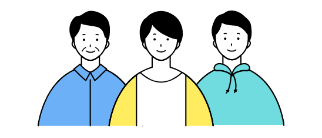
-
平均年収
574万円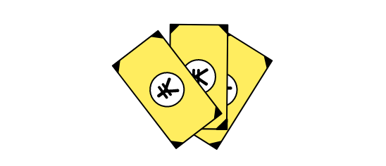
-
男女比
6:4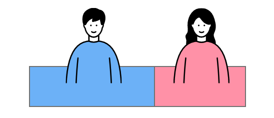
-
年間休日
125日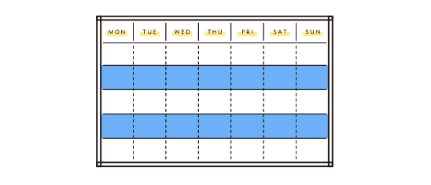
-
月間平均残業時間
4.4時間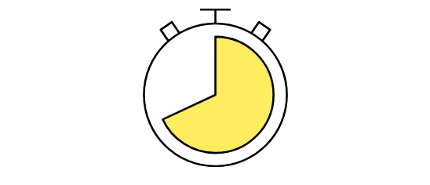
-
入社3年以内の昇格率
100% -
昇給額平均
32,500円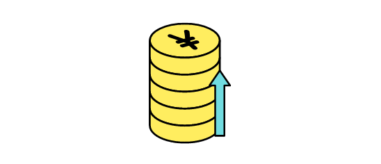
-
最高昇給額
80,000円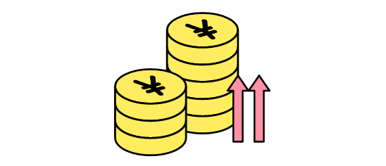
-
最低昇給額
10,000円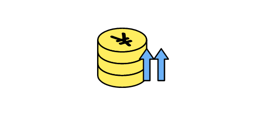
-
売上成長率
128%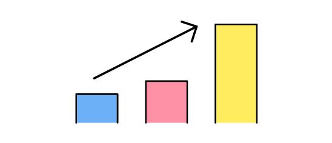